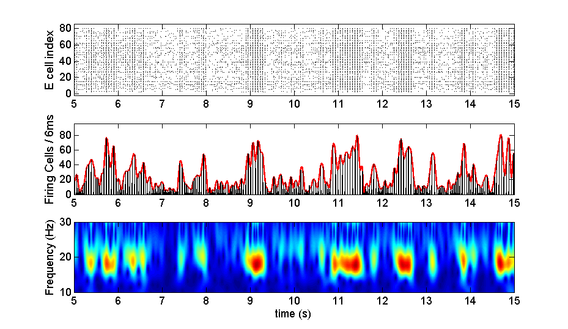

Author: Oscar Javier Avella Gonzalez (oscarjavella at gmail.com)
The model was implemented using the Simulation Environment NEURON
version 6.0 and uses Matlab V.2009b to analyze the data. All routines
are based on general functions of this platform.
Paper: Avella Gonzalez, O. J., Van Aerde, K. I., Van Elburg, R. A. J.,
Poil, S-S., Mansvelder, H. D., Linkenkaer-Hansen, K., Van Pelt, J.,
and Van Ooyen, A. (2012). External drive to inhibitory cells induces
alternating episodes of high- and low-amplitude oscillations. PloS
Computational Biology 8(8): e1002666.
doi:10.1371/journal.pcbi.1002666
The model and the corresponding set of routines are released under the
GNU GPL version 3: http://www.gnu.org/copyleft/gpl.html
Purpose of the study:
The model was designed to reproduce cortical oscillations, especially
those occurring in the beta and gamma band of the frequency spectrum,
as observed in the prefrontal cortex (PFC) and hippocampus of rats and
humans. Once those oscillation patterns were identified in the
model,we focused on the commonly observed but still unexplained
fluctuations in oscillation amplitude.
We characterized these fluctuations by the durations of high- and
low-amplitude episodes (HAE, LAE) of the oscillation. Next, we looked
for the particular conditions of the external inputs, i.e. constant
depolarizing currents (CDCs) and action potential trains (APs), that
were able to generate alternating episodes of high- and low-amplitude
oscillations. For further details, see the paper above.
Model description:
The model consisted of a network of 80 excitatory (E) cells and 20
inhibitory (I) cells, connected with AMPA (excitatory) and GABAa
(inhibitory) synapses. The synaptic strength and connection
probability was chosen so as to produce a strong PING-like
(pyramidal-interneuron gamma) rhythm.
Neurons were modeled as:
Single compartments.
Conductance-based cells with K+, Na+ and leak channels.
At the synaptic level:
Inhibitory cells project GABAA synapses.
Excitatory cells project AMPA synapses.
Running the simulation:
The model was originally ran on NEURON 6.0 using the conventional
commands line scheme, edited in pspad, but any other text editor also
works.
To set up the simulation example, either auto-launch from ModelDB (in
which case the model will automatically run a very short demo of 400ms
without writting any files) or download and extract the archive,
compile the mod files in the folders mods/other_mods mods/synapse
(mknrndll on mswin or mac or nrnivmodl in unix/linux) go to /main
directory and load the file
"Control_execute_network_bgk.hoc"
Once the windows are open, press the button "single run" in the
MultipleRuncontrol panel. The simulation will start, running for
40000ms. When the simulation stops, expand the window "Pyram Cells
Population # 0" in the horizontal axis, to check for the dynamics of
the excitatory population (rastergram). Do the same for the window
labeled Fast Spiking Cells Population #0 and check for the inhibitory
population dynamics.
The results of this "program run" are automatically saved in the file
.\output_matlab\WaxingWaning.m
Running the example:
The example shown in the file .\main\fig3a_b_c.tif can be obtained by
double clicking on the filename
.\main\run_exampleFig.m
into matlab click on "run" and wait for a couple of minutes until the
results are displayed:

Figure "fig3a_b_c.tif" corresponds to the image of figure 3 of the
PloS Comp. Biol. paper above, panels a, b and c. This is a clear
example depicting fluctuations in the amplitude of the oscillation,
due to the changes in synchrony between the cells, which is high
during HAEs and low during LAEs. From top to bottom, the figure shows
(a) the rastergram of the excitatory cells, (b) the firing rate
histogram (frh) and the corresponding interpolated spline
envelope. Finally in the bottom panel, we plotted (c) the wavelet
transform of the frh, showing clear fluctuations in the power
(amplitude) of the oscillation, for a frequency around 18Hz.
Producing the example figure:
Open the /main folder and double click on the file "runExampleFigs.m"
Once Matlab has loaded it, press the button "run".
Manipulating and Changing parameters:
To change connection probabilities, synaptic strength, and
characteristics of the inputs such as interspike intervals and CDC
(current) amplitudes, edit the file
\main\functions_net_bgk_multitest_sparse.hoc and check for the
respective parameter in lines 7-33 in the file.
To change the output file, open the folder \main\sessions and load the
file "DrivePower_run_mono_no_spk.ses" and modify the content of line
41 file_name="./output_matlab/WaxingWaning" with the modified name.